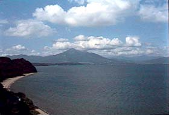

| 家纹：三つ引两 |
|  |
| 猪苗代湖 |
| 战国猪苗代纪略 | ||||
| 平安末年，三浦大介义明以八十九岁的高龄起兵响应源氏，却在衣笠城战死后，他的亲族渡海前 往房州投靠赖朝，其中义明第六子（一说七男）佐原义连，乃是身长七尺五寸的魁伟丈夫，一ノ谷之 战，及后来的藤原讨伐战中，均立下了赫赫战功，并因此受封会津四郡。义连长孙长门守经连，宝治 二年（1248年）出仕镰仓的将军九条赖嗣，被赠予会津猪苗代麻谷庄五千余町的土地，故更姓猪苗代， 成为会津盆地佐原一族中的强势人物。传说被称为龟之城的猪苗代城便是经连于建久二年（1191年） 修建的（根据考古学家的发掘显示，筑城时间约在更晚些时候的十三世纪中叶）。此城是在磐梯山向 猪苗代盆地东南方向突出海拔约30米高的丘陵上所建起的山城，因为海拔较低，也许称为平山城更为 贴切。该处是连接会津交通的中枢要地，北方越过桧原�g就是米泽，东北方向隔着土汤�g通向伊达领 内的信夫，伊达两郡，在战略上亦具有重要价值。经连子孙相续十四世皆以龟之城为居城，甚至在江 户初期颁布一国一城令时，经过蒲生氏乡改修的猪苗代城，竟经将军同意作为鹤之若松的支城一直保 存到幕末，才在戊辰战争的大火中土崩瓦解。 猪苗代氏在室町时代一直表现出旺盛的独立欲，屡次与宗家芦名氏爆发冲突，芦名方则因猪苗代毕竟是佐原长支，念及香火之情，也仅在击败叛军后利用外交折冲使其屈服，远江守盛诠继承芦名家督后，加强了对领内豪强的控制，猪苗代氏不得不在形式上表示臣从，然而心中愤懑，自不待言。当时的家督猪苗代经元忧闷成疾，早早的就将家业传给其子盛赖，隐居不出了。明应元年（1492年）三月三日，盛赖乘芦名盛高率重要家臣参拜神社举行大规模祭祀活动时，策动其家臣金曲伊贺起兵谋叛，但很快即遭到镇压，盛赖也成为主家怀疑的对象，由于不久芦名盛高，盛滋父子间爆发大规模内战，此事便没有再被深究。直到大永元年（1521年），盛赖再次策划了新的阴谋，他秘令族人盛光联络四宿老之一的松本新藏人，�c田刑部等，于六月十六日突袭黑川城，然而反叛再次失败。此后双方一直处于对立的局面。天文十年（1541年）五月，经过伊达��宗的调停，盛赖与主家达成和睦，并再次表示从属意愿，与此同时又向伊达示好，企图外结强援以自重，但却遭到��宗断然拒绝。同年十二月下旬，一不做二不休的盛赖索性亲自起兵，根据《异本塔寺长帐》记载，“猪苗代三浦弹正盛赖既已谋叛，旋于黑川城下为富田并佐濑二氏率军所困，猪苗代势溃败，不成阵列。”盛赖本人也在一个多月后降伏，不久就被芦名盛舜暗中处死。当时隐居的猪苗代经元已届耄耆之年，膝下别无所出，只得接受主家的安排，过继盛诠次子盛元，改名猪苗代盛清。而盛赖的儿子年仅六岁，他就是后来的猪苗代盛国。 猪苗代盛国，通称平太郎，弹正忠，最初名叫盛亲，成为盛清的养子后，改名盛国。由于生父被害，始终对主家抱有恶感，经元，盛清不久便相次死去，盛国遂继任为猪苗代城主。此时盛氏亦成为芦名家的家督，他统治期间关心民瘼，施行德政；对外则接连取得军事胜利，赢得了会津豪族的极大尊重。盛国和同时代的针生，金上诸氏相若，竭尽心力襄助主家以成霸业。天正十三年（1585），在以金上盛备为首的芦名家亲佐竹派迎立义广为家督后，五十岁的盛国宣告隐居，将家督之位让予嫡子盛胤。作为家中亲伊达派的中坚，盛国负气式的引退并没有引起太大反响，甚至连亲友们也责怪他过于意气用事，更让盛国感到不快的是新家督盛胤，当父亲要求他与芦名宗家保持距离时，盛胤却搬出什么“食君之禄，忠君之事”的大道理委婉拒绝。这时，盛国和续弦所生的儿子龟丸也逐渐长大，他的母亲便向盛国进谗，表示一旦盛国逝世，孀妻弱子无可依傍，势必遭到盛胤的无礼对待，盛国想想也颇有几分道理，便着手召集故臣商讨废嫡之事。未几，伊达成实受政宗之命派遣羽田右马助前往猪苗代的家臣石部下总家中探查详情，当得知盛国欲立幼子，并对义广可能进行的干涉表示忧虑时，羽田便作出担保，只要盛国承诺作为会津侵攻的内应，伊达家届时将出兵全力支持。于是盛国当下便表示愿意归附伊达家。和右马助会面的风声逐渐走漏，盛胤更是在家臣集会上怒斥投靠政宗的主张。三年后，乘义广出军帮助生父佐竹义重与伊达政宗在�D田地方连续缠斗，盛胤也赴召前往军中效力之际，盛国率亲随偷袭猪苗代城，守城军稍事抵抗便缴械投降，盛国再次成为猪苗代的主人。猪苗代家的变故直接导致义广无心恋战，最终使佐竹，芦名与伊达签缔结和议，一场原本或许可以扭转陆奥局面的战争就这样草草收场。 天正十七年（1589年），伊达方的军队开始在安积郡一带移动，企图从阿古岛城出发经由磐梯热海一路逼近猪苗代，并派遣老臣三藏轩先行前往猪苗代城。经过一番威逼利诱，盛国终于下定决心投向伊达家。其实以当时的情况来看，假使盛国拒绝伊达方的劝诱，坚守待援，政宗未必能够顺利入主会津。但据野史所云，伊达方的军师片仓小十郎指示协助军势的忍者集团黑胫巾组已顺利潜入猪苗代，并大肆散布城主投敌的流言，对于盛国不啻为骑虎难下之势，再加上去年的举动直接导致芦名家在战略上的失败，即使击退伊达家的攻击，也难免遭到义广的处罚。盛国请三藏轩回去复命，表示一俟伊达家军到时便开城出降，并将其子龟丸作为人质交给伊达军。猪苗代城的投敌，无疑是插向芦名家腹部的一把尖刀，两天以后，驻在郡山南方须贺川城的芦名义广得到报告，忙与众臣商议，一致得出政宗想赶在义广军返回前夺取黑川城的结论，当即拔营连夜赶往本据。第二天夕刻就抵达黑川城。而六月二日从本宫城进发的伊达军，也在四日晚间进入猪苗代城。怒火中烧的义广仅以不到一天的时间在城中进行休整，五日一早，即率一万六千人的大部队向着猪苗代进发，誓要手诛逆臣。政宗见到盛国后，便吩咐将龟丸送还，并以“此乃弹正世代所居，谙熟地形”为由，将盛国及从芦名方投来的士卒编为先阵，向汤达泽挺进。盛国在最初的遭遇战中就被富田隆实击溃，他的同族太郎丸扫部指挥铁炮队二百人从侧翼援护，也被奋勇而前的隆实军歼灭，太郎丸亦被讨取。随即伊达军主力投入战场，盛国方有余裕重整部队，迂回到芦名势后方放火烧毁了撤退的桥梁，又从义广军的背后杀出，彻底粉碎了芦名家的战意。政宗得到会津后，庸酬盛国的功劳，将其列入准一家的高位，并赏予五千石的俸禄。 盛胤在父亲的偷袭下失去居城后，进退难以自处，就以猪苗代湖东岸的安 积郡横泽村为据点，招集残部继续对抗盛国。伊达发动侵攻时，为了报复父亲 盛胤也赶往摺上原参战，当他发现伊达阵内盛国的旗帜，不顾芦名方已处于溃 退中，单骑杀入敌阵，为重兵包围身负重伤，眼见报仇无望，只好又回到横泽 村，芦名家灭亡后，盛胤就在那里安家，再不出仕，直到老死。盛胤的通称是 左马介。他的儿子中野盛亲，一称作左卫门，跟随盛胤隐居在会津，父亲死后 效力于山形的鸟居忠政，忠恒父子，后来追随保科正之，又回到故土。 猪苗代盛国的次子名叫盛直，是盛胤的同胞弟弟，母亲金上盛贞之女死后， 不久也夭折了。 小儿子龟丸，是盛国续弦二阶堂夫人所生，天正十七年六月三日，被作为 人质送往伊达家，当时年仅十三岁，负责照顾他的是酸川野左马允。政宗第二 天就把他送还给盛国，这样在猪苗代城中的片仓景纲好象反而成了盛国人质， 不把人质置诸掌握却送还盛国，其实是伊达家为了保证作战计划能顺利进行的苦肉计，同时也让盛国为之效死，收一举两得之效。 猪苗代家的旁系中，有一位名叫兼载的著名连歌师，他出生在享德年间，应仁之乱后师从浪迹关东的心敬学习，并在此结识了饭尾宗祗，后来兼载前往京都，作为连歌师享有很高声望。延德元年（1489年）被授予连歌界最高的荣誉称号北野连歌会所奉行之职，明应四年（1495）又帮助宗祗完成《新撰菟玖波集》的编纂工作。晚年向古河公方足利政氏献上著名的歌论书《景感道》，此书同时也是典雅的小句集，永正六年（1509年）因中风前往古河接受治疗，翌年死去，时五十九岁。其一生著述甚多，最受推崇的是句集《园尘》四卷，另有《若草山》，《兼载杂谈》等论著传世。 三浦猪苗代系图 三浦�x明�D�D三浦�x澄 ＋�D�D�D�D�D�D三浦泰村 （三浦大介）（三浦介） ｜ （若狭守） ∥ ｜ ∥ ∥�D�D�D三浦�x村�D＋ 北条泰�r�D�D娘 ∥ （�E河守） ｜（相模守） 伊�|�v�H�D�D�D娘 ｜ ∥ （伊�|入道） ｜ ∥�D�D�D�D�D�D�D北条�r氏 ＋�D北条�U�r ｜ ∥ （修理�亓粒� ｜（武�i守） ＋�D矢部禅尼 ∥ ｜ ∥ ∥�D�D�D�D＋�D北条�r�m�D…�D【北条得宗家】 ∥ ∥ （相模守） ∥ 安�_景盛�D�D松下禅尼 三浦�x明�D�D佐原�x�B ∥（秋田城介） （三浦大介）（左�l�T尉） ∥ ∥ ∥�D�D�D�D�D�D＋�D猪苗代�U�B�D…�D【会津猪苗代氏】 ∥�D�D�D�D�D佐原盛�B ｜（大炊亮） ∥ （�h江守） ｜ 武田信光�D�D�D娘 ＋�D佐原盛�r�D�D…�D【相模三浦介】 （五郎） ｜（三浦介） ｜ ＋�D会津光泰�D�D…�D【会津�J名氏】 ――三好逸势 |
||||